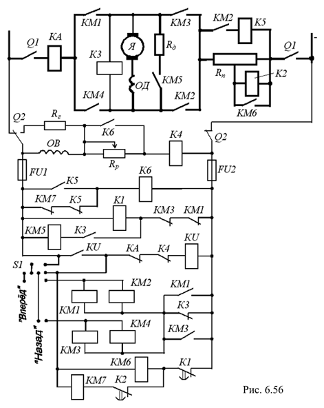

6.6.5.3. Управление двигателем постоянного тока
Использование различных способов пуска в ход, регулирования частоты вращения вала и торможения двигателей постоянного тока (ДПТ) позволяет получить схемы с разнообразными свойствами, отвечающими условиям работы исполнительных механизмов. На рис. 6.56 приведена схема управления ДПТ параллельного возбуждения, предусматривающая пуск в функции времени, плавное регулирование частоты вращения и динамическое торможение при остановке или реверсировании. Регулирование частоты вращения вала осуществляется за счёт изменения магнитного потока возбуждения Фв посредством регулировочного реостата Rр в цепи обмотки возбуждения ОВ. При отключении обмотки ОВ левым ножом рубильника Q2 она замыкается на резистор Rг без разрыва цепи.

Реверсирование двигателя осуществляется переводом контроллера S1 в положение "Назад". В тот момент времени, когда контроллер окажется в нулевом положении, контакторы КМ1 и КМ2 потеряют питание и ДПТ отключится от сети. Включится контакт КМ1 в цепи реле К1, что повлечёт за собой последовательное отключение контактора КМ6, включение реле К2, отключение контактора КМ7 и введение пускового реостата Rп. Одновременно с этим будет подано напряжение на контактор КМ5 (контакт К3 замкнут), который включит резистор динамического торможения Rд.
Дальнейший перевод контроллера S1 в положение "Назад" и замыкание контактов не влияет на процесс торможения двигателя, т. к. на контакторы КМ3 и КМ4 может быть подано напряжение только через контакт К3, который в это время разомкнут. Замыкание этого контакта произойдёт после окончания торможения, когда реле К3 отпустит свой якорь. Одновременно отключатся контактор КМ5 и резистор Rд. Вслед за этим включатся контакторы КМ3, КМ4, отключится реле К1 и произойдёт пуск в обратном направлении. Остановка двигателя при любом направлении вращения вала производится посредством перевода контроллера S1 в нулевое положение. При этом происходит описанное выше динамическое торможение.
В схеме предусмотрены максимально-токовая защита (реле КА), нулевая (реле КU) и защита ослабления магнитного поля Фв или обрыва цепи возбуждения (реле К4). Все виды защит вызывают отпускание якоря реле KU. В результате, в любом крайнем положении контроллера S1 левые контакты катушек контакторов КМ6 и КМ7 отключаются от сети.